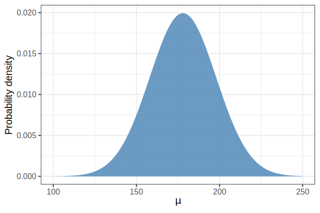

Chapitre 3 Modèle de régression linéaire
Introduction au chapitre blah blah…
3.1 Langage de la modélisation
\[ \begin{aligned} y_{i} &\sim \mathrm{Normal}(\mu_{i}, \sigma) \\ \mu_{i}&= \alpha + \beta x_{i} \\ \alpha &\sim \mathrm{Normal}(60, 10) \\ \beta &\sim \mathrm{Normal}(0, 10) \\ \sigma &\sim \mathrm{HalfCauchy}(0, 1) \end{aligned} \]
Objectif de la séance : comprendre ce type de modèle.
Les constituants de nos modèles seront toujours les mêmes et nous suivrons les deux mêmes étapes :
- Construire le modèle (likelihood + priors).
- Mettre à jour grâce aux données (updating), afin de calculer la distribution postérieure.
3.2 Un premier modèle
## 'data.frame': 544 obs. of 4 variables:
## $ height: num 152 140 137 157 145 ...
## $ weight: num 47.8 36.5 31.9 53 41.3 ...
## $ age : num 63 63 65 41 51 35 32 27 19 54 ...
## $ male : int 1 0 0 1 0 1 0 1 0 1 ...## height weight age male
## 1 151.765 47.82561 63 1
## 2 139.700 36.48581 63 0
## 3 136.525 31.86484 65 0
## 4 156.845 53.04191 41 1
## 5 145.415 41.27687 51 0
## 6 163.830 62.99259 35 1…
\[h_{i} \sim \mathrm{Normal}(\mu, \sigma)\]
d2 %>%
ggplot(aes(x = height) ) +
geom_histogram(bins = 10, col = "white") +
theme_bw(base_size = 18)
3.3 Loi normale
\[ p(x \ | \ \mu, \sigma) = \frac{1}{\sqrt{2 \pi \sigma^{2}}} \exp \bigg[-\frac{1}{2 \sigma^{2}} (\mu - x)^{2} \bigg] \]
data.frame(value = rnorm(1e4, 10, 1) ) %>% # 10000 samples from Normal(10, 1)
ggplot(aes(x = value) ) +
geom_histogram(col = "white") +
theme_bw(base_size = 20)
3.3.1 D’où vient la loi normale ?
Certaines valeurs sont fortement probables (autour de la moyenne \(\mu\)). Plus on s’éloigne, moins les valeurs sont probables (en suivant une décroissance exponentielle).

Figure 3.1: blah blah…
\[ y = \exp \big[-x^{2} \big] \]
On étend notre fonction aux valeurs négatives.

Figure 3.2: blah blah…
\[ y = \exp \big[-x^{2} \big] \]
Les points d’inflection nous donnent une bonne indication de là où la plupart des valeurs se trouvent (i.e., entre les points d’inflection). Les pics de la dérivée nous montrent les points d’inflection.

Figure 3.3: blah blah…
\[ y = \exp \bigg [- \frac{1}{2} x^{2} \bigg] \]
Ensuite on standardise la distribution de manière à ce que les deux points d’inflection se trouvent à \(x = -1\) et \(x = 1\).

Figure 3.4: blah blah…
\[ y = \exp \bigg [- \frac{1}{2 \color{steelblue}{\sigma^{2}}} x^{2} \bigg] \]
On insère un paramètre \(\sigma^{2}\) pour contrôler la distance entre les points d’inflection.

Figure 3.5: blah blah…
\[ y = \exp \bigg [- \frac{1}{2 \color{steelblue}{\sigma^{2}}} (x - \color{orangered}{\mu})^{2} \bigg] \]
On insère ensuite un paramètre \(\mu\) afin de pouvoir contrôler la position (la tendance centrale) de la distribution.

Figure 3.6: blah blah…
\[ y = \frac{1}{\sqrt{2 \pi \color{steelblue}{\sigma^{2}}}} \exp \bigg[-\frac{1}{2 \color{steelblue}{\sigma^{2}}} (\color{orangered}{\mu} - x)^{2} \bigg] \]
Mais… cette distribution n’intègre pas à 1. On divise donc par une constante de normalisation (la partie gauche), afin d’obtenir une distribution de probabilité.

Figure 3.7: blah blah…
3.4 Modèle gaussien
Nous allons construire un modèle de régression, mais avant d’ajouter un prédicteur, essayons de modéliser la distribution des tailles.
On cherche à savoir quel est le modèle (la distribution) qui décrit le mieux la répartition des tailles. On va donc explorer toutes les combinaisons possibles de \(\mu\) et \(\sigma\) et les classer par leurs probabilités respectives.
Notre but, une fois encore, est de décrire la distribution postérieure, qui sera donc d’une certaine manière une distribution de distributions.
On définit ensuite \(p(\mu,\sigma)\), la distribution a priori conjointe de tous les paramètres du modèle. On peut spécifier ces priors indépendamment pour chaque paramètre, sachant que \(p(\mu, \sigma) = p(\mu) p(\sigma)\).
\[\color{steelblue}{\mu \sim \mathrm{Normal}(178,20)}\]

Figure 3.8: blah blah…
On définit ensuite \(p(\mu,\sigma)\), la distribution a priori conjointe de tous les paramètres du modèle. On peut spécifier ces priors indépendamment pour chaque paramètre, sachant que \(p(\mu, \sigma) = p(\mu) p(\sigma)\).
\[\color{steelblue}{\sigma \sim \mathrm{Uniform}(0,50)}\]

Figure 3.9: blah blah…
3.5 Visualiser le prior
library(ks)
sample_mu <- rnorm(1e4, 178, 20) # prior on mu
sample_sigma <- runif(1e4, 0, 50) # prior on sigma
prior <- data.frame(cbind(sample_mu, sample_sigma) ) # multivariate prior
H.scv <- Hscv(x = prior, verbose = TRUE)
fhat_prior <- kde(x = prior, H = H.scv, compute.cont = TRUE)
plot(
fhat_prior, display = "persp", col = "steelblue", border = NA,
xlab = "\nmu", ylab = "\nsigma", zlab = "\n\np(mu, sigma)",
shade = 0.8, phi = 30, ticktype = "detailed",
cex.lab = 1.2, family = "Helvetica")
Figure 3.10: blah blah…
3.6 Échantillonner à partir du prior
sample_mu <- rnorm(1000, 178, 20)
sample_sigma <- runif(1000, 0, 50)
data.frame(x = rnorm(1000, sample_mu, sample_sigma) ) %>%
ggplot(aes(x) ) +
geom_histogram() +
xlab(expression(y[i]) ) +
theme_bw(base_size = 20)
Figure 3.11: blah blah…
3.7 Fonction de vraisemblance
## [1] 162.8648
Figure 3.12: blah blah…
On veut calculer la probabilité d’observer une certaine valeur de taille, sachant certaines valeurs de \(\mu\) et \(\sigma\), c’est à dire :
\[ p(x \ | \ \mu, \sigma) = \frac{1}{\sqrt{2 \pi \sigma^{2}}} \exp \bigg[-\frac{1}{2 \sigma^{2}} (\mu - x)^{2} \bigg] \]
On peut calculer cette densité de probabilité à l’aide des fonctions dnorm, dbeta, dt, dexp, dgamma, etc.
## [1] 0.01505675\[ p(x \ | \ \mu, \sigma) = \frac{1}{\sqrt{2 \pi \sigma^{2}}} \exp \bigg[-\frac{1}{2 \sigma^{2}} (\mu - x)^{2} \bigg] \]
Ou à la main…
normal_likelihood <- function (x, mu, sigma) {
bell <- exp( (- 1 / (2 * sigma^2) ) * (mu - x)^2 )
norm <- sqrt(2 * pi * sigma^2)
return(bell / norm)
}## [1] 0.015056753.8 Distribution postérieure
\[ \color{purple}{p(\mu, \sigma \ | \ h)} = \frac{\prod_{i} \color{orangered}{\mathrm{Normal}(h_{i} \ | \ \mu, \sigma)}\color{steelblue}{\mathrm{Normal}(\mu \ | \ 178, 20)\mathrm{Uniform}(\sigma \ | \ 0, 50)}} {\color{green}{\int \int \prod_{i} \mathrm{Normal}(h_{i} \ | \ \mu, \sigma)\mathrm{Normal}(\mu \ | \ 178, 20)\mathrm{Uniform}(\sigma \ | \ 0, 50) \mathrm{d} \mu \mathrm{d} \sigma}} \]
\[ \color{purple}{p(\mu, \sigma \ | \ h)} \propto \prod_{i} \color{orangered}{\mathrm{Normal}(h_{i} \ | \ \mu, \sigma)}\color{steelblue}{\mathrm{Normal}(\mu \ | \ 178, 20)\mathrm{Uniform}(\sigma \ | \ 0, 50)} \]
Il s’agit de la même formule vue lors des cours 1 et 2, mais cette fois en considérant qu’il existe plusieurs observations de taille (\(h_{i}\)), et deux paramètres à estimer \(\mu\) et \(\sigma\).
Pour calculer la vraisemblance marginale (en vert), il faut donc intégrer sur deux paramètres : \(\mu\) et \(\sigma\).
On réalise ici encore que la probabilité a posteriori est proportionnelle au produit de la vraisemblance et du prior.
3.8.1 Distribution postérieure - grid approximation
# définit une grille de valeurs possibles pour mu et sigma
mu.list <- seq(from = 140, to = 160, length.out = 200)
sigma.list <- seq(from = 4, to = 9, length.out = 200)
# étend la grille en deux dimensions (chaque combinaison de mu et sigma)
post <- expand.grid(mu = mu.list, sigma = sigma.list)
# calcul de la log-vraisemblance (pour chaque couple de mu et sigma)
post$LL <-
sapply(
1:nrow(post),
function(i) sum(dnorm(
d2$height,
mean = post$mu[i],
sd = post$sigma[i],
log = TRUE)
)
)
# calcul de la probabilité a posteriori (non normalisée)
post$prod <-
post$LL +
dnorm(post$mu, 178, 20, log = TRUE) +
dunif(post$sigma, 0, 50, log = TRUE)
# on "annule" le log en avec exp() et on standardise par la valeur maximale
post$prob <- exp(post$prod - max(post$prod) )
Figure 3.13: blah blah…

3.9 Introduction à brms
Under the hood : Stan est un langage de programmation probabiliste écrit en C++, et qui implémente plusieurs algorithmes de MCMC: HMC, NUTS, L-BFGS…
data {
int<lower=0> J; // number of schools
real y[J]; // estimated treatment effects
real<lower=0> sigma[J]; // s.e. of effect estimates
}
parameters {
real mu;
real<lower=0> tau;
real eta[J];
}
transformed parameters {
real theta[J];
for (j in 1:J)
theta[j] = mu + tau * eta[j];
}
model {
target += normal_lpdf(eta | 0, 1);
target += normal_lpdf(y | theta, sigma);
}Le package brms (Bürkner, 2017) permet de fitter des modèles multi-niveaux (ou pas) linéaires (ou pas) bayésiens en Stan mais en utilisant la syntaxe de lme4.
Par exemple, le modèle suivant :
\[ \begin{aligned} y_{i} &\sim \mathrm{Normal}(\mu_{i}, \sigma) \\ \mu_{i} &= \alpha + \alpha_{subject[i]} + \alpha_{item[i]} + \beta x_{i} \\ \end{aligned} \]
se spécifie avec brms (comme avec lme4) de la manière suivante :
3.9.1 Rappels de syntaxe
Le package brms utilise la même syntaxe que les fonctions de base R (comme lm) ou que le package lme4.
La partie gauche représente notre variable dépendante (ou outcome, i.e., ce qu’on essaye de prédire). Le package brms permet également de fitter des modèles multivariés (plusieurs outcomes) en les combinant avec mvbind():
La partie droite permet de définir les prédicteurs. L’intercept est généralement implicite, de sorte que les deux écritures ci-dessous sont équivalentes.
mvbind(Reaction, Memory) ~ Days + (1 + Days | Subject)
mvbind(Reaction, Memory) ~ 1 + Days + (1 + Days | Subject)Si l’on veut fitter un modèle sans intercept (why not), il faut le spécifier explicitement comme ci-dessous.
Par défaut brms postule une vraisemblance gaussienne. Ce postulat peut être changé facilement en spécifiant la vraisemblance souhaitée via l’argument family.
Lisez la documentation (c’est très enthousiasmant à lire) accessible via ?brm.
3.9.2 Quelques fonctions utiles
# Generate the Stan code:
make_stancode(formula, ...)
stancode(fit)
# Generate the data passed to Stan:
make_standata(formula, ...)
standata(fit)
# Handle priors:
get_prior(formula, ...)
set_prior(prior, ...)
# Generate expected values and predictions:
fitted(fit, ...)
predict(fit, ...)
marginal_effects(fit, ...)
# Model comparison:
loo(fit1, fit2, ...)
bayes_factor(fit1, fit2, ...)
model_weights(fit1, fit2, ...)
# Hypothesis testing:
hypothesis(fit, hypothesis, ...)3.9.3 Un premier exemple
## Estimate Est.Error l-95% CI u-95% CI Rhat Bulk_ESS
## Intercept 154.596269 0.4055957 153.789295 155.397191 1.0011827 3502
## sigma 7.755379 0.2909502 7.206345 8.338561 0.9999125 3240
## Tail_ESS
## Intercept 2553
## sigma 2825Ces données représentent les distributions marginales de chaque paramètre. En d’autres termes, la probabilité de chaque valeur de \(\mu\), après avoir moyenné sur toutes les valeurs possible de \(\sigma\), est décrite par une distribution gaussienne avec une moyenne de \(154.61\) et un écart type de \(0.41\). L’intervalle de crédibilité (\(\neq\) intervalle de confiance) nous indique les 95% valeurs de \(\mu\) ou \(\sigma\) les plus probables (sachant les données et les priors).
3.9.4 En utilisant notre prior
Par défaut brms utilise un prior très peu informatif centré sur la valeur moyenne de la variable mesurée. On peut donc affiner l’estimation réalisée par ce modèle en utilisant nos connaissances sur la distribution habituelle des tailles chez les humains.
La fonction get_prior() permet de visualiser une liste des priors par défaut ainsi que de tous les prios qu’on peut spécifier, sachant une certaine formule (i.e., une manière d’écrire notre modèle) et un jeu de données.
## prior class coef group resp dpar nlpar bound
## 1 student_t(3, 154, 10) Intercept
## 2 student_t(3, 0, 10) sigma…
priors <- c(
prior(normal(178, 20), class = Intercept),
prior(exponential(0.01), class = sigma)
)
mod2 <- brm(
height ~ 1,
prior = priors,
family = gaussian(),
data = d2
)
Figure 3.16: blah blah…
…
## Family: gaussian
## Links: mu = identity; sigma = identity
## Formula: height ~ 1
## Data: d2 (Number of observations: 352)
## Samples: 4 chains, each with iter = 2000; warmup = 1000; thin = 1;
## total post-warmup samples = 4000
##
## Population-Level Effects:
## Estimate Est.Error l-95% CI u-95% CI Rhat Bulk_ESS Tail_ESS
## Intercept 154.60 0.42 153.79 155.45 1.00 4273 2942
##
## Family Specific Parameters:
## Estimate Est.Error l-95% CI u-95% CI Rhat Bulk_ESS Tail_ESS
## sigma 7.77 0.29 7.21 8.37 1.00 3592 2572
##
## Samples were drawn using sampling(NUTS). For each parameter, Bulk_ESS
## and Tail_ESS are effective sample size measures, and Rhat is the potential
## scale reduction factor on split chains (at convergence, Rhat = 1).3.9.5 En utilisant un prior plus informatif
priors <- c(
prior(normal(178, 0.1), class = Intercept),
prior(exponential(0.01), class = sigma)
)
mod3 <- brm(
height ~ 1,
prior = priors,
family = gaussian(),
data = d2
)
Figure 3.17: blah blah…
…
## Family: gaussian
## Links: mu = identity; sigma = identity
## Formula: height ~ 1
## Data: d2 (Number of observations: 352)
## Samples: 4 chains, each with iter = 2000; warmup = 1000; thin = 1;
## total post-warmup samples = 4000
##
## Population-Level Effects:
## Estimate Est.Error l-95% CI u-95% CI Rhat Bulk_ESS Tail_ESS
## Intercept 177.86 0.10 177.67 178.07 1.00 2995 2704
##
## Family Specific Parameters:
## Estimate Est.Error l-95% CI u-95% CI Rhat Bulk_ESS Tail_ESS
## sigma 24.59 0.98 22.73 26.60 1.00 3310 2464
##
## Samples were drawn using sampling(NUTS). For each parameter, Bulk_ESS
## and Tail_ESS are effective sample size measures, and Rhat is the potential
## scale reduction factor on split chains (at convergence, Rhat = 1).On remarque que la valeur estimée pour \(\mu\) n’a presque pas “bougée” du prior…mais on remarque également que la valeur estimée pour \(\sigma\) a largement augmentée. Nous avons dit au modèle que nous étions assez certain de notre valeur de \(\mu\), le modèle s’est ensuite “adapté”, ce qui explique la valeur de \(\sigma\)…
3.9.6 Précision du prior (heuristique)
Le prior peut généralement être considéré comme un posterior obtenu sur des données antérieures.
On sait que le \(\sigma\) d’un posterior gaussien nous est donné par la formule:
\[\sigma_{post} = 1 / \sqrt{n}\]
Qui implique une quantité de données \(n = 1 / \sigma^2_{post}\). Notre prior avait un \(\sigma = 0.1\), ce qui donne \(n = 1 / 0.1^2 = 100\).
Donc, on peut considérer que le prior \(\mu \sim \mathrm{Normal}(178, 0.1)\) est équivalent au cas dans lequel nous aurions observé \(100\) tailles de moyenne \(178\).
3.9.7 Récupérer et visualiser les échantillons de la distribution postérieure
post <- posterior_samples(mod2) %>%
mutate(density = get_density(b_Intercept, sigma, n = 1e2) )
ggplot(post, aes(x = b_Intercept, y = sigma, color = density) ) +
geom_point(size = 2, alpha = 0.5, show.legend = FALSE) +
theme_bw(base_size = 20) +
labs(x = expression(mu), y = expression(sigma) ) +
viridis::scale_color_viridis()
Figure 3.18: blah blah…
3.9.8 Récupérer les échantillons de la distribution postérieure
## b_Intercept sigma lp__ density
## 1 154.1675 7.440771 -1227.819 0.38280356
## 2 154.6056 8.647619 -1230.642 0.04477185
## 3 154.4860 7.574599 -1226.855 1.05581289
## 4 154.7881 7.735000 -1226.737 1.19183990
## 5 154.9079 7.723339 -1226.910 0.91770555
## 6 155.5468 7.778743 -1229.218 0.12697447# gets the median and the 95% credible interval
t(sapply(post[, 1:2], quantile, probs = c(0.025, 0.5, 0.975) ) )## 2.5% 50% 97.5%
## b_Intercept 153.792974 154.587085 155.445788
## sigma 7.209974 7.761675 8.3723863.9.9 Visualiser la distribution postérieure
H.scv <- Hscv(post[, 1:2])
fhat_post <- kde(x = post[, 1:2], H = H.scv, compute.cont = TRUE)
plot(fhat_post, display = "persp", col = "purple", border = NA,
xlab = "\nmu", ylab = "\nsigma", zlab = "\np(mu, sigma)",
shade = 0.8, phi = 30, ticktype = "detailed",
cex.lab = 1.2, family = "Helvetica")
Figure 3.19: blah blah…
3.9.10 Visualiser la distribution postérieure

Figure 3.20: blah blah…

3.10 Régression linéaire à un prédicteur continu
\[ \begin{aligned} h_{i} &\sim \mathrm{Normal}(\mu_{i}, \sigma) \\ \mu_{i} &= \alpha + \beta x_{i} \\ \end{aligned} \]
## Mean StdDev 2.5% 97.5%
## (Intercept) 113.88 1.91 110.13 117.63
## weight 0.91 0.04 0.82 0.99
Figure 3.22: blah blah…
3.10.1 Différentes notations équivalentes
On considère un modèle de régression linéaire avec un seul prédicteur, une pente, un intercept, et des résidus distribués selon une loi normale. La notation :
\[ h_{i} = \alpha + \beta x_{i} + \epsilon_{i} \quad \text{avec} \quad \epsilon_{i} \sim \mathrm{Normal}(0, \sigma) \]
est équivalente à :
\[ h_{i} - (\alpha + \beta x_{i}) \sim \mathrm{Normal}(0, \sigma) \]
et si on réduit encore un peu :
\[ h_{i} \sim \mathrm{Normal}(\alpha + \beta x_{i}, \sigma). \]
Les notations ci-dessus sont équivalentes, mais la dernière est plus flexible, et nous permettra par la suite de l’étendre plus simplement aux modèles multi-niveaux.
\[ \begin{aligned} \color{orangered}{h_{i}} \ &\color{orangered}{\sim \mathrm{Normal}(\mu_{i},\sigma)} \\ \mu_{i} &= \alpha + \beta x_{i} \\ \color{steelblue}{\alpha} \ &\color{steelblue}{\sim \mathrm{Normal}(178, 20)} \\ \color{steelblue}{\beta} \ &\color{steelblue}{\sim \mathrm{Normal}(0, 10)} \\ \color{steelblue}{\sigma} \ &\color{steelblue}{\sim \mathrm{Exponential}(0.01)} \\ \end{aligned} \]
Dans ce modèle \(\mu\) n’est plus un paramètre à estimer (car \(\mu\) est déterminé par \(\alpha\) et \(\beta\)). À la place, nous allons estimer \(\alpha\) et \(\beta\).
Rappels: \(\alpha\) est l’intercept, c’est à dire la taille attendue, lorsque le poids est égal à \(0\). \(\beta\) est la pente, c’est à dire le changement de taille attendu quand le poids augmente d’une unité.
priors <- c(
prior(normal(178, 20), class = Intercept),
prior(normal(0, 10), class = b),
prior(exponential(0.01), class = sigma)
)
mod4 <- brm(
height ~ 1 + weight,
prior = priors,
family = gaussian(),
data = d2
)## Family: gaussian
## Links: mu = identity; sigma = identity
## Formula: height ~ 1 + weight
## Data: d2 (Number of observations: 352)
## Samples: 4 chains, each with iter = 2000; warmup = 1000; thin = 1;
## total post-warmup samples = 4000
##
## Population-Level Effects:
## Estimate Est.Error l-95% CI u-95% CI Rhat Bulk_ESS Tail_ESS
## Intercept 113.85 1.94 109.99 117.57 1.00 4238 2831
## weight 0.91 0.04 0.82 0.99 1.00 4195 2830
##
## Family Specific Parameters:
## Estimate Est.Error l-95% CI u-95% CI Rhat Bulk_ESS Tail_ESS
## sigma 5.10 0.20 4.73 5.50 1.00 4320 2915
##
## Samples were drawn using sampling(NUTS). For each parameter, Bulk_ESS
## and Tail_ESS are effective sample size measures, and Rhat is the potential
## scale reduction factor on split chains (at convergence, Rhat = 1).- \(\beta = 0.90, 95\% \ \text{CrI} \ [0.82, 0.99]\) nous indique qu’une augmentation de 1kg entraîne une augmentation de 0.90cm.
- \(\alpha = 113.91, 95\% \ \text{CrI} \ [110.12, 117.59]\) représente la taille moyenne quand le poids est égal à 0kg…
…
d2$weight.c <- d2$weight - mean(d2$weight)
mod5 <- brm(
height ~ 1 + weight.c,
prior = priors,
family = gaussian(),
data = d2
)## Estimate Est.Error Q2.5 Q97.5
## Intercept 154.6041274 0.26881156 154.0940923 155.136346
## weight.c 0.9054817 0.04169769 0.8257568 0.986823- Après avoir centré la réponse, l’intercept représente la valeur attendue de taille lorsque le poids est à sa valeur moyenne.
3.10.2 Représenter les prédictions du modèle
d2 %>%
ggplot(aes(x = weight, y = height) ) +
geom_point(colour = "white", fill = "black", pch = 21, size = 3, alpha = 0.8) +
geom_abline(intercept = fixef(mod4)[1], slope = fixef(mod4)[2], lwd = 1) +
theme_bw(base_size = 20)
Figure 3.23: blah blah…
3.10.3 Représenter l’incertitude sur \(\mu\) via fitted()
# on crée un vecteur de valeurs possibles pour "weight"
weight.seq <- data.frame(weight = seq(from = 25, to = 70, by = 1) )
# on récupère les prédictions du modèle pour ces valeurs de poids
mu <- data.frame(fitted(mod4, newdata = weight.seq) ) %>% bind_cols(weight.seq)
# on affiche les 10 premières lignes de mu
head(mu, 10)## Estimate Est.Error Q2.5 Q97.5 weight
## 1 136.4940 0.8868959 134.7545 138.2112 25
## 2 137.3996 0.8459024 135.7326 139.0369 26
## 3 138.3053 0.8051397 136.7157 139.8647 27
## 4 139.2109 0.7646447 137.7035 140.6884 28
## 5 140.1166 0.7244624 138.6860 141.5137 29
## 6 141.0222 0.6846476 139.6686 142.3364 30
## 7 141.9279 0.6452686 140.6482 143.1610 31
## 8 142.8335 0.6064102 141.6302 143.9900 32
## 9 143.7392 0.5681793 142.6142 144.8173 33
## 10 144.6448 0.5307113 143.5932 145.6431 34…
d2 %>%
ggplot(aes(x = weight, y = height) ) +
geom_point(colour = "white", fill = "black", pch = 21, size = 3, alpha = 0.8) +
geom_smooth(
data = mu, aes(y = Estimate, ymin = Q2.5, ymax = Q97.5),
stat = "identity",
color = "black", alpha = 0.8, size = 1
) +
theme_bw(base_size = 20)
Figure 3.24: blah blah…
3.10.4 Intervalles de prédiction (incorporer \(\sigma\))
Pour rappel, voici notre modèle : \(h_{i} \sim \mathrm{Normal}(\alpha + \beta x_{i}, \sigma)\). Pour l’instant, on a seulement représenté les prédictions pour \(\mu\). Comment incorporer \(\sigma\) dans nos prédictions ?
# on crée un vecteur de valeurs possibles pour "weight"
weight.seq <- data.frame(weight = seq(from = 25, to = 70, by = 1) )
# on récupère les prédictions du modèle pour ces valeurs de poids
pred_height <- data.frame(predict(mod4, newdata = weight.seq) ) %>% bind_cols(weight.seq)
# on affiche les 10 premières lignes de pred_height
head(pred_height, 10)## Estimate Est.Error Q2.5 Q97.5 weight
## 1 136.5298 5.226114 126.2533 146.6159 25
## 2 137.3114 5.251353 126.7437 147.4522 26
## 3 138.2283 5.190104 127.9380 148.1205 27
## 4 139.0752 5.131011 128.8969 148.9301 28
## 5 140.0758 5.167473 129.6902 150.0120 29
## 6 141.2148 5.145859 131.1712 151.2082 30
## 7 141.9808 5.173275 131.6302 152.2938 31
## 8 142.8875 5.102686 132.9276 153.1687 32
## 9 143.8561 5.148533 133.4497 153.7075 33
## 10 144.6518 5.115883 134.5489 154.5921 34d2 %>%
ggplot(aes(x = weight, y = height) ) +
geom_point(colour = "white", fill = "black", pch = 21, size = 3, alpha = 0.8) +
geom_ribbon(
data = pred_height, aes(x = weight, ymin = Q2.5, ymax = Q97.5),
alpha = 0.2, inherit.aes = FALSE
) +
geom_smooth(
data = mu, aes(y = Estimate, ymin = Q2.5, ymax = Q97.5),
stat = "identity", color = "black", alpha = 0.8, size = 1
) +
theme_bw(base_size = 20)
Figure 3.25: blah blah…
3.10.5 Deux types d’incertitude
Deux sources d’incertitude dans le modèle : incertitude concernant l’estimation de la valeur des paramètres mais également concernant le processus d’échantillonnage.
Incertitude épistémique : La distribution a posteriori ordonne toutes les combinaisons possibles des valeurs des paramètres selon leurs plausibilités relatives.
Incertitude aléatoire : La distribution des données simulées est elle, une distribution qui contient de l’incertitude liée à un processus d’échantillonnage (i.e., générer des données à partir d’une gaussienne).
Voir aussi ce court article par O’Hagan (2012).
3.11 Régression polynomiale
d %>% # on utilise d au lieu de d2
ggplot(aes(x = weight, y = height) ) +
geom_point(colour = "white", fill = "black", pch = 21, size = 3, alpha = 0.8) +
theme_bw(base_size = 20)
Figure 3.26: blah blah…
Si on considère tout l’échantillon (pas seulement les adultes), la relation entre taille et poids semble incurvée…
d <- d %>% mutate(weight.s = (weight - mean(weight) ) / sd(weight) )
d %>%
ggplot(aes(x = weight.s, y = height) ) +
geom_point(colour = "white", fill = "black", pch = 21, size = 3, alpha = 0.8) +
theme_bw(base_size = 20)
Figure 3.27: blah blah…
## [1] -2.712698e-18 1.000000e+00Pourquoi standardiser les prédicteurs ?
- Interprétation. Un changement d’une unité du prédicteur correspond à un changement d’un écart-type sur la réponse. Permet de comparer les coefficients de plusieurs prédicteurs.
- Fitting. Quand les prédicteurs contiennent de grandes valeurs, cela peut poser des problèmes…
3.11.1 Modèle de régression polynomiale
\[ \begin{aligned} &\color{orangered}{h_{i} \sim \mathrm{Normal}(\mu_{i}, \sigma)} \\ &\mu_{i} = \alpha + \beta_{1} x_{i} + \beta_{2} x_{i}^{2} \\ &\color{steelblue}{\alpha \sim \mathrm{Normal}(156, 100)} \\ &\color{steelblue}{\beta_{1} \sim \mathrm{Normal}(0, 10)} \\ &\color{steelblue}{\beta_{2} \sim \mathrm{Normal}(0, 10)} \\ &\color{steelblue}{\sigma \sim \mathrm{Exponential}(0.01)} \\ \end{aligned} \]
À vous de construire ce modèle en utilisant brms::brm()…
priors <- c(
prior(normal(156, 100), class = Intercept),
prior(normal(0, 10), class = b),
prior(exponential(0.01), class = sigma)
)
mod6 <- brm(
# NB: polynomials should be written with the I() function...
height ~ 1 + weight.s + I(weight.s^2),
prior = priors,
family = gaussian(),
data = d
)## Family: gaussian
## Links: mu = identity; sigma = identity
## Formula: height ~ 1 + weight.s + I(weight.s^2)
## Data: d (Number of observations: 544)
## Samples: 4 chains, each with iter = 2000; warmup = 1000; thin = 1;
## total post-warmup samples = 4000
##
## Population-Level Effects:
## Estimate Est.Error l-95% CI u-95% CI Rhat Bulk_ESS Tail_ESS
## Intercept 146.66 0.37 145.94 147.39 1.00 3449 3106
## weight.s 21.40 0.29 20.81 21.98 1.00 3809 2664
## Iweight.sE2 -8.41 0.28 -8.96 -7.87 1.00 3613 3084
##
## Family Specific Parameters:
## Estimate Est.Error l-95% CI u-95% CI Rhat Bulk_ESS Tail_ESS
## sigma 5.78 0.18 5.45 6.15 1.00 3672 2637
##
## Samples were drawn using sampling(NUTS). For each parameter, Bulk_ESS
## and Tail_ESS are effective sample size measures, and Rhat is the potential
## scale reduction factor on split chains (at convergence, Rhat = 1).…
3.11.2 Représenter les prédictions du modèle
# on crée un vecteur de valeurs possibles pour "weight"
weight.seq <- data.frame(weight.s = seq(from = -2.5, to = 2.5, length.out = 50) )
# on récupère les prédictions du modèle pour ces valeurs de poids
mu <- data.frame(fitted(mod6, newdata = weight.seq) ) %>% bind_cols(weight.seq)
pred_height <- data.frame(predict(mod6, newdata = weight.seq) ) %>% bind_cols(weight.seq)
# on affiche les 10 premières lignes de pred_height
head(pred_height, 10)## Estimate Est.Error Q2.5 Q97.5 weight.s
## 1 40.55951 5.982982 28.99413 52.13111 -2.500000
## 2 46.89999 5.969746 34.97976 58.23946 -2.397959
## 3 53.08936 5.849776 41.30942 64.22898 -2.295918
## 4 59.12495 5.834515 47.90513 70.45351 -2.193878
## 5 65.12540 5.934144 53.55400 77.00895 -2.091837
## 6 70.75275 5.811465 59.46340 82.10160 -1.989796
## 7 76.27845 5.803020 64.76757 87.74822 -1.887755
## 8 81.49317 5.958165 69.83562 92.90433 -1.785714
## 9 86.67128 5.809761 75.20261 97.81837 -1.683673
## 10 91.69845 5.795457 80.38817 102.62859 -1.581633…
d %>%
ggplot(aes(x = weight.s, y = height) ) +
geom_point(colour = "white", fill = "black", pch = 21, size = 3, alpha = 0.8) +
geom_ribbon(
data = pred_height, aes(x = weight.s, ymin = Q2.5, ymax = Q97.5),
alpha = 0.2, inherit.aes = FALSE
) +
geom_smooth(
data = mu, aes(y = Estimate, ymin = Q2.5, ymax = Q97.5),
stat = "identity", color = "black", alpha = 0.8, size = 1
) +
theme_bw(base_size = 20)
Figure 3.28: blah blah…
3.12 Modèle de régression, taille d’effet
Il existe plusieurs méthodes pour calculer les tailles d’effet dans les modèles bayésiens. Gelman & Pardoe (2006) proposent une méthode pour calculer un \(R^{2}\) basé sur l’échantillon.
Marsman et al. (2017), Marsman et al. (2019) généralisent des méthodes existantes pour calculer un \(\rho^{2}\) pour les designs de type ANOVA (i.e., avec prédicteurs catégoriels), qui représente une estimation de la taille d’effet dans la population, et non basé sur l’échantillon.
"Similar to most of the ES measures that have been proposed for the ANOVA model, the squared multiple correlation coefficient \(\rho^{2}\) […] is a so-called proportional reduction in error measure (PRE; Reynolds, 1977). In general, a PRE measure expresses the proportion of the variance in an outcome \(y\) that is attributed to the independent variables \(x\)" (Marsman et al., 2019).
\[ \begin{aligned} \rho^{2} &= \dfrac{\sum_{i = 1}^{n} \pi_{i}(\beta_{i} - \beta)^{2}}{\sigma^{2} + \sum_{i=1}^{n} \pi_{i}(\beta_{i} - \beta)^{2}} \\ \rho^{2} &= \dfrac{ \frac{1}{n} \sum_{i=1}^{n} \beta_{i}^{2}}{\sigma^{2} + \frac{1}{n} \sum_{i = 1}^{n} \beta_{i}^{2}} \\ \rho^{2} &= \dfrac{\beta^{2} \tau^{2}}{\sigma^{2} + \beta^{2} \tau^{2}}\\ \end{aligned} \]
post <- posterior_samples(mod4)
beta <- post$b_weight
sigma <- post$sigma
f1 <- beta^2 * var(d2$weight)
rho <- f1 / (f1 + sigma^2)Attention, si plusieurs prédicteurs, dépend de la structure de covariance…

Figure 3.29: blah blah…
## [1] 0.56964443.13 Conclusions
On a présenté un nouveau modèle à deux puis trois paramètres : le modèle gaussien, puis la régression linéaire gaussienne, permettant de mettre en relation deux variables continues.
Comme précédemment, le théorème de Bayes est utilisé pour mettre à jour nos connaissances a priori quant à la valeur des paramètres en une connaissance a posteriori, synthèse entre nos priors et l’information contenue dans les données.
La package brms permet de fitter toutes sortes de modèles avec une syntaxe similaire à celle utilisée par lm().
La fonction fitted() permet de récupérer les prédictions d’un modèle fitté avec brms (i.e., un modèle de classe brmsfit).
La fonction predict() permet de simuler des données à partir d’un modèle fitté avec brms.